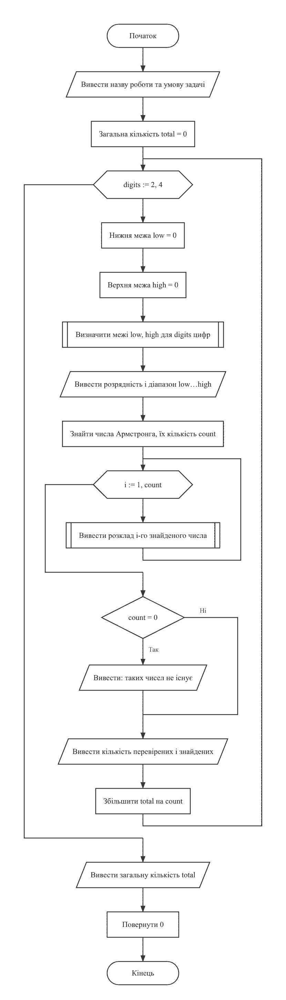
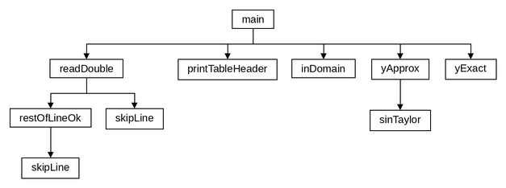
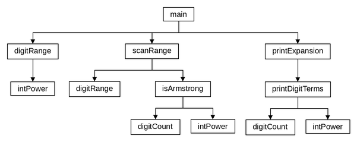

LAB4(19)Основи програмуванняLAB4(19)
Лабораторна робота №4
Рекурентні співвідношення. Степеневі ряди
Варіант 19. Виконав: Одарчук Олексій, КНУ імені Тараса Шевченка, Факультет інформаційних технологій, Кафедра програмних систем і технологій, група ІПЗ-11. C17, gcc
- 2 завдання
- C
- 8 розділів
01Мета роботи#
- Вивчити особливості циклічних обчислювальних процесів з розгалуженнями.
- Опанувати технологію рекурентних обчислень.
- Навчитися розробляти алгоритми та програми розвинення функцій у ряди.
02Умова задачі#
Завдання 1#
Обчислити значення функції y, розвинувши функцію sin(x) у ряд Тейлора. Визначити похибку обчислення (таблиця 4.2, варіант 19):
| sin²(x) - sin(x), якщо 0 < x ≤ 1
y = |
| sin³(x) + sin(2x), якщо -2 ≤ x ≤ 0
Аргумент змінюється від заданого з клавіатури мінімального значення до максимального із заданим кроком; точність розвинення вводиться з клавіатури в діапазоні 10⁻⁶...10⁻²; функції обчислення факторіалу та степеня не використовувати; похибка визначається як різниця абсолютних значень наближеного та стандартного обчислення функції.
Завдання 2#
Натуральне число із n цифр є числом Армстронга, якщо сума його цифр, піднесених до n-го степеня, дорівнює самому числу (наприклад, 153 = 1³ + 5³ + 3³ = 1 + 125 + 27). Визначити всі числа Армстронга, що складаються з двох, трьох та чотирьох цифр (таблиця 4.3, варіант 19).
03Аналіз задачі та теоретичне обґрунтування#
Завдання 1. Розвинення sin(x) у ряд#
Ряд Маклорена (окремий випадок ряду Тейлора при розвиненні в околі нуля) для синуса:
sin(t) = t - t³/3! + t⁵/5! - t⁷/7! + ... загальний доданок: a(n) = (-1)ⁿ · t^(2n+1) / (2n+1)!
Факторіал і степінь окремо обчислювати заборонено, тому доданок виражено через попередній:
a(n+1) -t² ────── = ────────────────────── a(n) (2n + 2)·(2n + 3) початковий доданок: a(0) = t
Ряд для синуса знакозмінний, а його члени спадають за модулем починаючи з номера, де
t² стає меншим за (2n+2)(2n+3): для великих аргументів
(наприклад, sin(2x) при x = -2, тобто t = -4)
перші члени спершу зростають. Підсумовування припиняється вже на спадній ділянці, де
похибка часткової суми не перевищує модуля першого відкинутого доданка, тому умова
"модуль доданка менший за eps" гарантує задану точність.
Область визначення функції - [-2; 1]; точка x = 0 належить
другій гілці. Для аргументів поза цим проміжком програма повідомляє, що функцію не
визначено.
Поточний аргумент обчислюється як xStart + steps·step, а не накопиченням
x += step, щоб не накопичувати похибку додавання.
Таблиця результатів містить чотири колонки, передбачені умовою (значення аргументу, значення функції за рядом, стандартне значення, похибка), і додаткову п'яту - кількість доданків ряду для кожної точки; вона показує, як швидкість збіжності залежить від аргументу, і не замінює обов'язкових колонок.
Завдання 2. Числа Армстронга#
Для числа з n цифр перевіряється рівність:
n-цифрове число N = d₁ⁿ + d₂ⁿ + ... + dₙⁿ, де dᵢ - цифри числа N
Цифри виділяються операціями rest % 10 і rest / 10, степінь
обчислює власна функція intPower() послідовним множенням.
Бібліотечна pow() тут непридатна: вона повертає дійсне число, і для цілих
показників можливе значення виду 124,999999997, яке спотворило б порівняння.
Перевіряються всі числа кожної розрядності (90 + 900 + 9000), тож знайдений перелік повний.
Вибір типів даних#
Кожна змінна має найменший тип, у який гарантовано вміщується її діапазон або якого досить для потрібної точності.
| Змінні | Тип | Чому |
|---|---|---|
Завдання 1: X_MIN, X_MAX, EPS_MIN |
float |
Межі -2 і 1 зберігаються у float точно; для нижньої межі точності
float досить.
|
Завдання 1: EPS_MAX |
double |
У float 1e-2f трохи менше за 0,01, і введене значення
1e-2 відхилялося б як завелике.
|
Завдання 1: ARG_TOLERANCE |
double |
У float -2 - 1e-12 дорівнює -2: допуск зникає. |
Завдання 1: sum, term, t2,
s, s2x, approx, exact,
eps
|
double |
Сума ряду у float має похибку округлення порядку 10⁻⁷, сумірну із
точністю 10⁻⁶. Перевірка з float на сітці з кроком 0,25 при eps =
10⁻⁶: при x = -2 похибка 2,45·10⁻⁷ замість 1,75·10⁻⁹, тобто в колонці похибки
був би шум округлення, а не похибка ряду.
|
Завдання 1: error, maxError |
double |
Похибки порядку 10⁻⁹ у float губляться. |
Завдання 1: xStart, xEnd, step,
x
|
double |
Перевірка з float: для проміжку [-2; -0,8] з кроком 0,2 остання
точка -0,8 губиться (6 точок замість 7), бо похибка float більша за
допуск 10⁻¹².
|
Завдання 1: steps |
int |
Кількість кроків залежить від введених меж і кроку й нічим не обмежена, тому 16 біт не гарантовано вистачить. |
Завдання 1: n, terms, n2 |
short |
Номер доданка не перевищує 20, тож і кількість доданків за обидва розвинення вміщується в 16 біт. |
Завдання 1: c, scanned |
short |
Символ або EOF та результат scanf() (1, 0 або
EOF).
|
Завдання 2: числа n, low, high,
rest, divisor
|
short |
Числа не більші за 9999. |
Завдання 2: sum, result у intPower()
|
short |
Степінь цифри не більший за 9⁴ = 6561, сума степенів - за 4·6561 = 26244 < 32767. |
Завдання 2: digits, digit, count,
total, found[], i
|
short |
Малі лічильники, цифри й знайдені числа (до 9999). |
long у програмах не використовується. Бібліотечна sin() працює
з double, тож еталонні значення завдання 1 теж мають тип
double.
Література: Ковалюк Т.В. Алгоритмізація та програмування. - Львів.: "Магнолія 2006", 2024. - 400 с.; Deitel P., Deitel H. C++ How to Program. Pearson Education, Inc. Hoboken, New Jersey. 2017. - 3015 p.
04Блок-схема алгоритму#




HIPO-діаграма показує ієрархію викликів функцій так само, як у лекції 5: зверху головна функція main, від неї стрілки ведуть до функцій, які вона викликає, нижче - функції, що викликаються з них; петля біля блока означає рекурсивний виклик. Функцію, яку викликають з кількох місць, розгорнуто лише там, де вона трапляється вперше, а довгі переліки викликів подано стовпчиком, щоб схема вміщувалася на сторінку. Діаграму побудовано за текстом програми.


Схеми побудовано за текстами програм у rombik (rombik.app) відповідно до ДСТУ 19.701-90 (ISO 5807). Структура кожної схеми точно відповідає коду функції, а блоки описують дії словами, як у методичних вказівках, без фрагментів коду.
05Текст програми#
Завдання 1 - task1.c
/*==============================================================================
task1.c. Лабораторна робота №4. Завдання 1. Варіант 19.
Тема: рекурентні співвідношення, степеневі ряди.
Умова (таблиця 4.2, варіант 19): обчислити значення функції y, розвинувши
функцію sin(x) у ряд Тейлора. Визначити похибку обчислення.
| sin^2(x) - sin(x), 0 < x <= 1
y = |
| sin^3(x) + sin(2*x), -2 <= x <= 0
Вимоги методичних вказівок:
- параметр функції змінюється від заданого з клавіатури мінімального
значення до максимального із заданим кроком;
- точність розвинення вводиться з клавіатури в діапазоні 1e-2 ... 1e-6;
- для розвинення створити власну функцію, що обчислює суму ряду за
рекурентним співвідношенням;
- функції обчислення факторіалу та степеня НЕ використовувати;
- похибка - різниця абсолютних значень наближеного та стандартного
обчислення функції;
- стандартне значення обчислювати бібліотечною функцією.
Виконав: Одарчук Олексій, КНУ імені Тараса Шевченка, ФІТ, група ІПЗ-11.
Компілятор: gcc -std=c17
==============================================================================*/
#include <stdio.h>
#include <stdbool.h>
#include <ctype.h>
#include <math.h>
/* Межі області визначення функції за умовою варіанта. */
const float X_MIN = -2.0f; //ліва межа області визначення
const float X_MAX = 1.0f; //права межа області визначення
/* Межі припустимої точності розвинення за умовою варіанта. */
const float EPS_MIN = 1e-6f; //найменша припустима точність
const double EPS_MAX = 1e-2; //double: у float 1e-2f < 0.01, уведене 1e-2 відхилялося б
/* Допуск порівняння аргументу з межами, щоб точки на межі не відкидались
через похибку округлення. */
const double ARG_TOLERANCE = 1e-12; //double: у float -2 - 1e-12 = -2, допуск зникає
//=============== sinTaylor: обчислити sin(t) розвиненням у ряд Тейлора ================
/*
sinTaylor - обчислити sin(t) розвиненням у ряд Тейлора (ряд Маклорена).
Ряд: sin(t) = t - t^3/3! + t^5/5! - t^7/7! + ...
Рекурентне співвідношення. Позначимо a(n) - доданок з номером n (n = 0, 1, 2...):
a(n) = (-1)^n * t^(2n+1) / (2n+1)!
Тоді
a(n+1) -t^2
------ = ------------------------
a(n) (2n+2) * (2n+3)
Початковий доданок a(0) = t.
Отже ані факторіал, ані піднесення до степеня окремо не обчислюються:
кожен наступний доданок отримується з попереднього сталою кількістю
множень і одним діленням, незалежно від номера доданка.
Параметри:
t [вхідний] - аргумент синуса;
eps [вхідний] - точність: підсумовування триває, доки модуль
доданка не стане меншим за eps;
terms [вихідний] - адреса лічильника доданків ряду.
Повертає: наближене значення sin(t).
Локальні змінні:
sum - накопичувана сума ряду;
term - поточний доданок ряду a(n);
n - номер поточного доданка; кількість доданків дорівнює n + 1;
t2 - квадрат аргументу (обчислюється один раз).
*/
double sinTaylor(double t, double eps, short *terms)
{
const double t2 = t * t; //double: похибка float ~1e-7 перевищує точність 1e-6
double sum = t; //double: похибка float ~1e-7 перевищує точність 1e-6
double term = t; //double: похибка float ~1e-7 перевищує точність 1e-6
short n = 0; //номер поточного доданка (не більше 20)
while (fabs(term) >= eps) //повторювати, доки доданок не менший eps
{
/* Рекурентний перехід a(n) -> a(n+1). */
//обчислити наступний доданок
term *= -t2 / ((2.0 * n + 2.0) * (2.0 * n + 3.0));
sum += term; //накопичити суму ряду
++n; //перейти до наступного номера
}
*terms = n + 1; //зберегти кількість доданків
return sum; //повернути суму ряду
}
//====== yApprox: обчислити значення кусково-заданої функції y(x), використовуючи ======
/*
yApprox - обчислити значення кусково-заданої функції y(x), використовуючи
наближене (рядом Тейлора) значення синуса.
Параметри:
x [вхідний] - аргумент функції;
eps [вхідний] - точність розвинення в ряд;
terms [вихідний] - адреса лічильника доданків ряду (сумарно за виклик).
Повертає: значення y(x).
Передумова: x належить області визначення [-2; 1]; перевірку виконує
функція inDomain() перед викликом.
Локальні змінні:
s - наближене значення sin(x);
s2x - наближене значення sin(2x);
n2 - кількість доданків розвинення sin(2x).
*/
double yApprox(double x, double eps, short *terms)
{
if (x > 0.0) //якщо аргумент додатний
{
/* Гілка 0 < x <= 1: y = sin^2(x) - sin(x) */
const double s = sinTaylor(x, eps, terms); //double: точність до 1e-6
return s * s - s; //повернути значення першої гілки
}
/* Гілка -2 <= x <= 0: y = sin^3(x) + sin(2x) */
short n2 = 0; //кількість доданків розвинення sin(2x)
const double s = sinTaylor(x, eps, terms); //double: точність до 1e-6
const double s2x = sinTaylor(2.0 * x, eps, &n2); //double: точність до 1e-6
*terms += n2; //додати доданки розвинення sin(2x)
return s * s * s + s2x; //повернути значення другої гілки
}
//====== yExact: обчислити те саме значення y(x) через бібліотечну функцію sin() =======
/*
yExact - обчислити те саме значення y(x) через бібліотечну функцію sin().
Використовується як еталон для визначення похибки.
Параметри: x [вхідний] - аргумент функції.
Повертає : значення y(x), обчислене стандартними засобами.
*/
double yExact(double x)
{
if (x > 0.0) //якщо аргумент додатний
{
const double s = sin(x); //double: еталон має бути точнішим за 1e-6
return s * s - s; //повернути значення першої гілки
}
const double s = sin(x); //double: еталон має бути точнішим за 1e-6
return s * s * s + sin(2.0 * x); //повернути значення другої гілки
}
//========= inDomain: чи належить аргумент області визначення функції [-2; 1] ==========
/*
inDomain - чи належить аргумент області визначення функції [-2; 1].
Параметри: x [вхідний] - аргумент функції.
Повертає : true - функцію визначено в точці x.
Порівняння виконується з невеликим допуском, щоб точки на межі діапазону
не відкидались через похибку округлення при обчисленні аргументу.
*/
bool inDomain(double x)
{
//перевірити належність до [-2; 1]
return x >= X_MIN - ARG_TOLERANCE && x <= X_MAX + ARG_TOLERANCE;
}
//========= skipLine: відкинути залишок рядка введення разом із символом '\n' ==========
/*
skipLine - відкинути залишок рядка введення разом із символом '\n'.
*/
void skipLine(void)
{
short c = getchar(); //прочитати перший символ (символ або EOF)
while (c != '\n' && c != EOF) //повторювати до кінця рядка
{
c = getchar(); //прочитати наступний символ
}
}
//======= restOfLineOk: перевірити залишок рядка після успішно прочитаного числа =======
/*
restOfLineOk - перевірити залишок рядка після успішно прочитаного числа.
Припустимі лише пропуски до кінця рядка або до наступного числа; інший
символ (наприклад, "0.5abc") - помилка, і решта рядка відкидається.
Повертає : true - залишок рядка коректний; false - у рядку є сторонні символи.
Локальні змінні:
c - черговий прочитаний символ.
*/
bool restOfLineOk(void)
{
short c = getchar(); //прочитати перший символ (символ або EOF)
while (c == ' ' || c == '\t' || c == '\r') //пропускати пробільні символи
{
c = getchar(); //прочитати наступний символ
}
if (c == '\n' || c == EOF) //якщо рядок закінчився
{
return true; //повернути ознаку коректного рядка
}
if (isdigit(c) || c == '-' || c == '+') //якщо далі починається число
{
ungetc(c, stdin); //повернути символ у потік
return true; //повернути ознаку коректного рядка
}
skipLine(); //відкинути решту рядка
return false; //повернути ознаку помилки
}
//======== readDouble: прочитати скінченне дійсне число з контролем коректності ========
/*
readDouble - прочитати скінченне дійсне число з контролем коректності
введення (не число, "inf", "nan", сторонні символи після числа
відхиляються).
Параметри:
prompt [вхідний] - текст запрошення;
value [вихідний] - адреса змінної для введеного числа.
Повертає : true - число прочитано; false - вхідні дані вичерпано.
Локальні змінні:
scanned - результат scanf(): 1 - число прочитано, 0 - не число,
EOF - вхідні дані вичерпано.
*/
bool readDouble(const char *prompt, double *value)
{
for (;;) //повторювати до коректного введення
{
printf("%s", prompt); //вивести запрошення
const short scanned = scanf("%lf", value); //увести число (1, 0 або EOF)
if (scanned == EOF) //якщо вхідні дані вичерпано
{
return false; //повернути ознаку вичерпання
}
//якщо число коректне й скінченне
if (scanned == 1 && restOfLineOk() && isfinite(*value))
{
return true; //повернути ознаку успіху
}
if (scanned == 0) //якщо введено не число
{
skipLine(); //відкинути некоректний рядок
}
//вивести повідомлення про помилку
printf("Помилка: очікується дійсне число. Повторіть.\n");
}
}
//============ printTableHeader: вивести заголовок таблиці значень функції =============
/*
printTableHeader - вивести заголовок таблиці значень функції: аргумент,
наближене та стандартне значення, похибка, доданки ряду.
*/
void printTableHeader(void)
{
printf(" x | y (ряд Тейлора) | y (бібліотечна) |"
" похибка | доданків\n"); //вивести заголовок таблиці
printf(" -----------+--------------------+--------------------"
"+----------------+---------\n"); //вивести розділювальну лінію
}
//================================ головна функція main ================================
/*
Головна функція. Читає межі та крок зміни аргументу, точність розвинення,
табулює функцію і виводить таблицю значень з похибками.
Локальні змінні:
xStart, xEnd, step - межі та крок зміни аргументу;
eps - точність розвинення в ряд;
x - поточне значення аргументу;
approx, exact - наближене та еталонне значення функції;
error - похибка обчислення;
terms - кількість доданків ряду;
steps - номер поточного кроку табулювання;
maxError - найбільша похибка за всю таблицю.
*/
int main(void)
{
printf("Лабораторна робота №4, завдання 1 (варіант 19)\n"); //вивести назву роботи
printf("Виконав: студент групи ІПЗ-11 Одарчук Олексій\n"); //вивести виконавця
//вивести назву завдання
printf("Обчислення y(x) з розвиненням sin(x) у ряд Тейлора\n\n");
//вивести першу гілку функції
printf(" y = sin^2(x) - sin(x), якщо 0 < x <= 1\n");
//вивести другу гілку функції
printf(" y = sin^3(x) + sin(2x), якщо -2 <= x <= 0\n\n");
printf("Область визначення: [-2; 1].\n\n"); //вивести область визначення
double xStart = 0.0; //double: у float остання точка діапазону губиться
double xEnd = 0.0; //double: у float остання точка діапазону губиться
double step = 0.0; //double: у float остання точка діапазону губиться
double eps = 0.0; //double: точність до 1e-6
//якщо межі аргументу не прочитано
if (!readDouble("Уведіть початкове значення аргументу: ", &xStart) ||
!readDouble("Уведіть кінцеве значення аргументу: ", &xEnd))
{
return 1; //завершити з кодом помилки
}
do //повторювати введення кроку
{
//якщо крок не прочитано
if (!readDouble("Уведіть крок зміни аргументу (> 0): ", &step))
{
return 1; //завершити з кодом помилки
}
if (step <= 0.0) //якщо крок недодатний
{
//вивести повідомлення про помилку
printf("Помилка: крок має бути додатним.\n");
}
} while (step <= 0.0); //повторювати, доки крок недодатний
do //повторювати введення точності
{
//якщо точність не прочитано
if (!readDouble("Уведіть точність (від 1e-6 до 1e-2): ", &eps))
{
return 1; //завершити з кодом помилки
}
/* Умова записана через заперечення, щоб значення поза діапазоном
(зокрема NaN, для якого будь-яке порівняння хибне) не проходили. */
if (!(eps >= EPS_MIN && eps <= EPS_MAX)) //якщо точність поза діапазоном
{
printf("Помилка: точність має бути в діапазоні %g ... %g.\n", EPS_MIN,
EPS_MAX); //вивести повідомлення про помилку
}
} while (!(eps >= EPS_MIN && eps <= EPS_MAX)); //повторювати до коректної точності
if (xStart > xEnd) //якщо початок більший за кінець
{
//вивести повідомлення про порожню таблицю
printf("\nПочаткове значення більше за кінцеве - таблиця порожня.\n");
return 2; //завершити з кодом порожньої таблиці
}
printf("\nТочність розвинення: %.1e\n\n", eps); //вивести задану точність
printTableHeader(); //вивести заголовок таблиці
double maxError = 0.0; //double: похибки порядку 1e-9 у float губляться
int steps = 0; //номер поточного кроку (кількість кроків не обмежена)
double x = xStart; //double: у float остання точка діапазону губиться
/* Цикл табулювання. Аргумент обчислюється через лічильник кроків замість
накопичення x += step, щоб похибка додавання не накопичувалась від кроку
до кроку. */
while (x <= xEnd + ARG_TOLERANCE) //перебрати аргументи до кінця діапазону
{
if (!inDomain(x)) //якщо аргумент поза областю визначення
{
//вивести повідомлення про невизначеність
printf(" %10.4f | %s\n", x,
"функцію не визначено (аргумент поза межами [-2; 1])");
}
else //інакше обчислити значення функції
{
short terms = 0; //кількість доданків ряду
//double: похибка float ~1e-7 перевищує саму похибку ряду
const double approx = yApprox(x, eps, &terms);
const double exact = yExact(x); //double: еталон має бути точнішим за 1e-6
/* Похибка за умовою варіанта - різниця абсолютних значень
наближеного та стандартного обчислення функції. */
//double: похибки порядку 1e-9 у float губляться
const double error = fabs(fabs(approx) - fabs(exact));
if (error > maxError) //якщо похибка більша за найбільшу
{
maxError = error; //запам'ятати найбільшу похибку
}
printf(" %10.4f | %18.12f | %18.12f | %14.3e | %8hd\n", x, approx, exact,
error, terms); //вивести рядок таблиці
}
++steps; //збільшити номер кроку
x = xStart + steps * step; //обчислити наступний аргумент
}
printf("\nОброблено точок: %d\n", steps); //вивести кількість точок
//вивести найбільшу похибку
printf("Найбільша похибка за таблицею: %.3e\n", maxError);
printf("Задана точність розвинення: %.3e\n", eps); //вивести задану точність
return 0; //завершити програму успішно
}
Завдання 2 - task2.c
/*==============================================================================
task2.c. Лабораторна робота №4. Завдання 2. Варіант 19.
Тема: цикли з розгалуженням, комбінаторні задачі.
Умова (таблиця 4.3, варіант 19): натуральне число із n цифр є числом
Армстронга, якщо сума його цифр, піднесених до n-го степеня, дорівнює
самому числу (наприклад, 153 = 1^3 + 5^3 + 3^3 = 1 + 125 + 27).
Визначити всі числа Армстронга, що складаються з двох, трьох та
чотирьох цифр.
Степінь обчислюється за рекурентним співвідношенням (послідовним
множенням у цілій арифметиці), без бібліотечної функції pow().
Виконав: Одарчук Олексій, КНУ імені Тараса Шевченка, ФІТ, група ІПЗ-11.
Компілятор: gcc -std=c17
==============================================================================*/
#include <stdio.h>
#include <stdbool.h>
/* Розмір масиву для знайдених чисел однієї розрядності. Чисел Армстронга
з двох, трьох і чотирьох цифр відповідно 0, 4 і 3. Межа масиву в мові C має
бути сталим виразом часу компіляції, а змінна з модифікатором const ним не є,
тому розмір задано константою переліку. */
enum
{
MAX_FOUND = 16 //розмір масиву знайдених чисел
};
//=============== intPower: піднести ціле число до натурального степеня ================
/*
intPower - піднести ціле число до натурального степеня.
Реалізує рекурентне співвідношення p(0) = 1, p(i) = p(i-1) * base,
тобто степінь накопичується послідовним множенням. Бібліотечна функція
pow() не використовується: вона працює з дійсними числами і для цілих
показників може давати результат виду 124.9999999, який після
перетворення до цілого типу (відкидання дробової частини) дав би 124
замість 125 і спотворив би порівняння.
Параметри:
base [вхідний] - основа степеня (цифра числа, 0..9);
exp [вхідний] - показник степеня (кількість цифр числа, 2..4).
Повертає: значення base у степені exp (не більше 9^4 = 6561).
Локальні змінні:
result - накопичуване значення степеня;
i - лічильник множень.
*/
short intPower(short base, short exp)
{
short result = 1; //накопичуване значення степеня (не більше 6561)
for (short i = 0; i < exp; ++i) //повторити множення exp разів
{
result *= base; //помножити на основу
}
return result; //повернути степінь
}
//=============== digitCount: кількість цифр у десятковому записі числа ================
/*
digitCount - кількість цифр у десятковому записі числа.
Параметри: n [вхідний] - натуральне число (не більше 9999); у процесі
підрахунку від нього відкидаються цифри.
Повертає : кількість цифр (для n = 0 повертає 1).
Локальні змінні:
count - лічильник цифр.
*/
short digitCount(short n)
{
short count = 0; //лічильник цифр
do //повторювати відкидання цифр
{
++count; //збільшити лічильник цифр
n /= 10; //відкинути молодшу цифру
} while (n > 0); //повторювати, доки лишились цифри
return count; //повернути кількість цифр
}
//===================== isArmstrong: чи є число числом Армстронга ======================
/*
isArmstrong - чи є число числом Армстронга.
Параметри: n [вхідний] - число, що перевіряється.
Повертає: true - сума цифр, піднесених до степеня, що дорівнює кількості
цифр числа, збігається із самим числом.
Локальні змінні:
digits - кількість цифр числа;
sum - накопичувана сума степенів цифр;
rest - залишок числа, що ще не оброблено;
digit - чергова цифра числа.
*/
bool isArmstrong(short n)
{
const short digits = digitCount(n); //обчислити кількість цифр
short sum = 0; //сума степенів цифр (не більше 4 * 6561 = 26244)
short rest = n; //залишок необробленого числа
while (rest > 0) //перебрати цифри числа
{
const short digit = rest % 10; //виділити молодшу цифру
sum += intPower(digit, digits); //накопичити степінь цифри
rest /= 10; //відкинути молодшу цифру
}
return sum == n; //повернути результат порівняння
}
//====== printDigitTerms: вивести доданки розкладу числа через " + ", від старшої ======
/*
printDigitTerms - вивести доданки розкладу числа через " + ", від старшої
цифри до молодшої: або у вигляді степенів (1^3 + 5^3 + 3^3),
або їх значеннями (1 + 125 + 27).
Параметри:
n [вхідний] - число (не більше 9999); у процесі виведення від
нього відкидаються старші цифри;
asPowers [вхідний] - true: степені; false: значення степенів.
Локальні змінні:
digits - кількість цифр числа;
divisor - дільник для виділення старшої цифри;
i - номер розряду;
digit - чергова цифра.
*/
void printDigitTerms(short n, bool asPowers)
{
const short digits = digitCount(n); //обчислити кількість цифр
/* Найстарший розряд: 10^(digits-1). */
short divisor = intPower(10, digits - 1); //обчислити дільник старшого розряду
for (short i = 0; i < digits; ++i) //перебрати розряди від старшого
{
const short digit = n / divisor; //виділити старшу цифру
if (asPowers) //якщо потрібні степені
{
printf("%hd^%hd", digit, digits); //вивести цифру у степені
}
else //інакше вивести значення степенів
{
printf("%hd", intPower(digit, digits)); //вивести значення степеня
}
if (i < digits - 1) //якщо розряд не останній
{
printf(" + "); //вивести знак плюс
}
n %= divisor; //відкинути старшу цифру
divisor /= 10; //перейти до молодшого розряду
}
}
//====== printExpansion: вивести розклад числа Армстронга у вигляді суми степенів ======
/*
printExpansion - вивести розклад числа Армстронга у вигляді суми степенів
окремим рядком з відступом.
Наприклад: 153 = 1^3 + 5^3 + 3^3 = 1 + 125 + 27
Параметри: n [вхідний] - число Армстронга.
*/
void printExpansion(short n)
{
printf(" %hd = ", n); //вивести число
printDigitTerms(n, true); //вивести суму степенів
printf(" = "); //вивести знак рівності
printDigitTerms(n, false); //вивести значення степенів
printf("\n"); //завершити рядок
}
//==== digitRange: визначити межі діапазону натуральних чисел із заданою кількістю =====
/*
digitRange - визначити межі діапазону натуральних чисел із заданою кількістю
цифр: від 10^(digits-1) до 10^digits - 1.
Параметри:
digits [вхідний] - кількість цифр (2, 3 або 4);
low [вихідний] - адреса для найменшого числа (10, 100, 1000);
high [вихідний] - адреса для найбільшого числа (99, 999, 9999).
*/
void digitRange(short digits, short *low, short *high)
{
*low = intPower(10, digits - 1); //обчислити найменше число
*high = *low * 10 - 1; //обчислити найбільше число
}
//======= scanRange: перебрати всі числа заданої розрядності й зібрати знайдені ========
/*
scanRange - перебрати всі числа заданої розрядності й зібрати знайдені
числа Армстронга до масиву.
Параметри:
digits [вхідний] - кількість цифр (2, 3 або 4);
found [вихідний] - масив для знайдених чисел;
capacity [вхідний] - розмір масиву found.
Повертає : кількість знайдених чисел Армстронга.
Локальні змінні:
low, high - межі діапазону чисел заданої розрядності;
count - лічильник знайдених чисел;
n - число, що перевіряється.
*/
short scanRange(short digits, short found[], short capacity)
{
short low = 0; //нижня межа діапазону
short high = 0; //верхня межа діапазону
short count = 0; //лічильник знайдених чисел
digitRange(digits, &low, &high); //визначити межі діапазону
for (short n = low; n <= high && count < capacity; ++n) //перебрати числа діапазону
{
if (isArmstrong(n)) //якщо число Армстронга
{
found[count] = n; //зберегти знайдене число
++count; //збільшити лічильник знайдених
}
}
return count; //повернути кількість знайдених
}
//================================ головна функція main ================================
/*
Головна функція. Послідовно перебирає двоцифрові, трицифрові та
чотирицифрові числа й виводить знайдені числа Армстронга.
Локальні змінні:
total - загальна кількість знайдених чисел;
digits - поточна розрядність;
low, high - межі діапазону чисел поточної розрядності;
found - знайдені числа поточної розрядності;
count - їх кількість;
i - номер знайденого числа.
*/
int main(void)
{
printf("Лабораторна робота №4, завдання 2 (варіант 19)\n"); //вивести назву роботи
printf("Виконав: студент групи ІПЗ-11 Одарчук Олексій\n"); //вивести виконавця
//вивести назву завдання
printf("Пошук чисел Армстронга з двох, трьох та чотирьох цифр\n");
//вивести означення числа Армстронга
printf("Число з n цифр є числом Армстронга, якщо сума його цифр,\n"
"піднесених до n-го степеня, дорівнює самому числу.\n");
short total = 0; //загальна кількість знайдених чисел
/* За умовою перевіряються числа з двох, трьох та чотирьох цифр. */
for (short digits = 2; digits <= 4; ++digits) //перебрати розрядності від 2 до 4
{
short low = 0; //нижня межа діапазону
short high = 0; //верхня межа діапазону
digitRange(digits, &low, &high); //визначити межі діапазону
printf("\n=== Числа Армстронга з %hd цифр (діапазон %hd..%hd) ===\n", digits,
low,
high); //вивести заголовок розрядності
short found[MAX_FOUND]; //знайдені числа поточної розрядності
//знайти числа Армстронга
const short count = scanRange(digits, found, MAX_FOUND);
for (short i = 0; i < count; ++i) //перебрати знайдені числа
{
printExpansion(found[i]); //вивести розклад числа
}
if (count == 0) //якщо чисел не знайдено
{
//вивести повідомлення про відсутність
printf(" чисел Армстронга цієї розрядності не існує\n");
}
//вивести кількість перевірених і знайдених
printf(" Перевірено чисел: %d, знайдено: %hd\n", high - low + 1, count);
total += count; //накопичити загальну кількість
}
//вивести роздільну лінію
printf("\n============================================================\n");
//вивести загальну кількість
printf("Усього знайдено чисел Армстронга: %hd\n", total);
return 0; //завершити програму успішно
}
06Результати виконання роботи#
Компіляція: make (gcc -std=c17, прапорці
-Wall -Wextra -pedantic -O2). Попереджень компілятора немає.
Нижче наведено екранні копії повних прогонів програм: кожна починається з запуску програми, містить усе введення з клавіатури й увесь вивід до завершення роботи. Прогін, що не вміщується на один екран, подано кількома послідовними частинами. Протоколи всіх прогонів, зокрема додаткових наборів вхідних даних, винесено окремими файлами за посиланнями.
![Екранна копія 1 - завдання 1: табулювання функції на [-2; 1] з кроком 0,25 при точності 10⁻⁶](results/shot_task1_1.png)
sh./bin/task1 - протокол: 4 прогонів, 140 рядківРозгорнутиЗгорнути
ishawyha@op:~/OP_FirstCourse/Lab4$ ./bin/task1 # [-2; 1], крок 0.25, точність 1e-6
Лабораторна робота №4, завдання 1 (варіант 19)
Виконав: студент групи ІПЗ-11 Одарчук Олексій
Обчислення y(x) з розвиненням sin(x) у ряд Тейлора
y = sin^2(x) - sin(x), якщо 0 < x <= 1
y = sin^3(x) + sin(2x), якщо -2 <= x <= 0
Область визначення: [-2; 1].
Уведіть початкове значення аргументу: -2
Уведіть кінцеве значення аргументу: 1
Уведіть крок зміни аргументу (> 0): 0.25
Уведіть точність (від 1e-6 до 1e-2): 1e-6
Точність розвинення: 1.0e-06
x | y (ряд Тейлора) | y (бібліотечна) | похибка | доданків
-----------+--------------------+--------------------+----------------+---------
-2.0000 | 0.004975548891 | 0.004975550639 | 1.748e-09 | 19
-1.7500 | -0.601939860445 | -0.601939855822 | 4.622e-09 | 17
-1.5000 | -1.133623787774 | -1.133623777429 | 1.034e-08 | 16
-1.2500 | -1.453100914402 | -1.453100938306 | 2.390e-08 | 14
-1.0000 | -1.505120662713 | -1.505120663417 | 7.037e-10 | 14
-0.7500 | -1.314205759201 | -1.314205757400 | 1.802e-09 | 12
-0.5000 | -0.951666391959 | -0.951666392110 | 1.514e-10 | 11
-0.2500 | -0.494568818050 | -0.494568818039 | 1.028e-11 | 9
0.0000 | 0.000000000000 | 0.000000000000 | 0.000e+00 | 2
0.2500 | -0.186195240194 | -0.186195240200 | 5.308e-12 | 4
0.5000 | -0.249576691539 | -0.249576691538 | 5.025e-13 | 5
0.7500 | -0.217007360474 | -0.217007360857 | 3.830e-10 | 5
1.0000 | -0.133397566643 | -0.133397566534 | 1.092e-10 | 6
Оброблено точок: 13
Найбільша похибка за таблицею: 2.390e-08
Задана точність розвинення: 1.000e-06
ishawyha@op:~/OP_FirstCourse/Lab4$ ./bin/task1 # [-2; 1], крок 0.25, точність 1e-4
Лабораторна робота №4, завдання 1 (варіант 19)
Виконав: студент групи ІПЗ-11 Одарчук Олексій
Обчислення y(x) з розвиненням sin(x) у ряд Тейлора
y = sin^2(x) - sin(x), якщо 0 < x <= 1
y = sin^3(x) + sin(2x), якщо -2 <= x <= 0
Область визначення: [-2; 1].
Уведіть початкове значення аргументу: -2
Уведіть кінцеве значення аргументу: 1
Уведіть крок зміни аргументу (> 0): 0.25
Уведіть точність (від 1e-6 до 1e-2): 1e-4
Точність розвинення: 1.0e-04
x | y (ряд Тейлора) | y (бібліотечна) | похибка | доданків
-----------+--------------------+--------------------+----------------+---------
-2.0000 | 0.004976576336 | 0.004975550639 | 1.026e-06 | 15
-1.7500 | -0.601939365713 | -0.601939855822 | 4.901e-07 | 15
-1.5000 | -1.133623331409 | -1.133623777429 | 4.460e-07 | 14
-1.2500 | -1.453102414542 | -1.453100938306 | 1.476e-06 | 12
-1.0000 | -1.505119425430 | -1.505120663417 | 1.238e-06 | 11
-0.7500 | -1.314205439532 | -1.314205757400 | 3.179e-07 | 10
-0.5000 | -0.951666413299 | -0.951666392110 | 2.119e-08 | 9
-0.2500 | -0.494568814891 | -0.494568818039 | 3.148e-09 | 7
0.0000 | 0.000000000000 | 0.000000000000 | 0.000e+00 | 2
0.2500 | -0.186195246312 | -0.186195240200 | 6.113e-09 | 3
0.5000 | -0.249576691317 | -0.249576691538 | 2.210e-10 | 4
0.7500 | -0.217007435641 | -0.217007360857 | 7.478e-08 | 4
1.0000 | -0.133397549534 | -0.133397566534 | 1.700e-08 | 5
Оброблено точок: 13
Найбільша похибка за таблицею: 1.476e-06
Задана точність розвинення: 1.000e-04
ishawyha@op:~/OP_FirstCourse/Lab4$ ./bin/task1 # [-2; 1], крок 0.25, точність 1e-2
Лабораторна робота №4, завдання 1 (варіант 19)
Виконав: студент групи ІПЗ-11 Одарчук Олексій
Обчислення y(x) з розвиненням sin(x) у ряд Тейлора
y = sin^2(x) - sin(x), якщо 0 < x <= 1
y = sin^3(x) + sin(2x), якщо -2 <= x <= 0
Область визначення: [-2; 1].
Уведіть початкове значення аргументу: -2
Уведіть кінцеве значення аргументу: 1
Уведіть крок зміни аргументу (> 0): 0.25
Уведіть точність (від 1e-6 до 1e-2): 1e-2
Точність розвинення: 1.0e-02
x | y (ряд Тейлора) | y (бібліотечна) | похибка | доданків
-----------+--------------------+--------------------+----------------+---------
-2.0000 | 0.004897605444 | 0.004975550639 | 7.795e-05 | 13
-1.7500 | -0.600847786775 | -0.601939855822 | 1.092e-03 | 11
-1.5000 | -1.133068543285 | -1.133623777429 | 5.552e-04 | 10
-1.2500 | -1.453023014780 | -1.453100938306 | 7.792e-05 | 10
-1.0000 | -1.505586447310 | -1.505120663417 | 4.658e-04 | 8
-0.7500 | -1.314138585444 | -1.314205757400 | 6.717e-05 | 7
-0.5000 | -0.951863139135 | -0.951666392110 | 1.967e-04 | 6
-0.2500 | -0.494568870686 | -0.494568818039 | 5.265e-08 | 5
0.0000 | 0.000000000000 | 0.000000000000 | 0.000e+00 | 2
0.2500 | -0.186191134983 | -0.186195240200 | 4.105e-06 | 2
0.5000 | -0.249576755100 | -0.249576691538 | 6.356e-08 | 3
0.7500 | -0.216997813582 | -0.217007360857 | 9.547e-06 | 3
1.0000 | -0.133263888889 | -0.133397566534 | 1.337e-04 | 3
Оброблено точок: 13
Найбільша похибка за таблицею: 1.092e-03
Задана точність розвинення: 1.000e-02
ishawyha@op:~/OP_FirstCourse/Lab4$ ./bin/task1 # контроль області визначення: [-3; 2]
Лабораторна робота №4, завдання 1 (варіант 19)
Виконав: студент групи ІПЗ-11 Одарчук Олексій
Обчислення y(x) з розвиненням sin(x) у ряд Тейлора
y = sin^2(x) - sin(x), якщо 0 < x <= 1
y = sin^3(x) + sin(2x), якщо -2 <= x <= 0
Область визначення: [-2; 1].
Уведіть початкове значення аргументу: -3
Уведіть кінцеве значення аргументу: 2
Уведіть крок зміни аргументу (> 0): 1
Уведіть точність (від 1e-6 до 1e-2): 1e-4
Точність розвинення: 1.0e-04
x | y (ряд Тейлора) | y (бібліотечна) | похибка | доданків
-----------+--------------------+--------------------+----------------+---------
-3.0000 | функцію не визначено (аргумент поза межами [-2; 1])
-2.0000 | 0.004976576336 | 0.004975550639 | 1.026e-06 | 15
-1.0000 | -1.505119425430 | -1.505120663417 | 1.238e-06 | 11
0.0000 | 0.000000000000 | 0.000000000000 | 0.000e+00 | 2
1.0000 | -0.133397549534 | -0.133397566534 | 1.700e-08 | 5
2.0000 | функцію не визначено (аргумент поза межами [-2; 1])
Оброблено точок: 6
Найбільша похибка за таблицею: 1.238e-06
Задана точність розвинення: 1.000e-04
sh./bin/task2 - протокол: 1 прогонів, 26 рядківРозгорнутиЗгорнути
ishawyha@op:~/OP_FirstCourse/Lab4$ ./bin/task2 # пошук чисел Армстронга
Лабораторна робота №4, завдання 2 (варіант 19)
Виконав: студент групи ІПЗ-11 Одарчук Олексій
Пошук чисел Армстронга з двох, трьох та чотирьох цифр
Число з n цифр є числом Армстронга, якщо сума його цифр,
піднесених до n-го степеня, дорівнює самому числу.
=== Числа Армстронга з 2 цифр (діапазон 10..99) ===
чисел Армстронга цієї розрядності не існує
Перевірено чисел: 90, знайдено: 0
=== Числа Армстронга з 3 цифр (діапазон 100..999) ===
153 = 1^3 + 5^3 + 3^3 = 1 + 125 + 27
370 = 3^3 + 7^3 + 0^3 = 27 + 343 + 0
371 = 3^3 + 7^3 + 1^3 = 27 + 343 + 1
407 = 4^3 + 0^3 + 7^3 = 64 + 0 + 343
Перевірено чисел: 900, знайдено: 4
=== Числа Армстронга з 4 цифр (діапазон 1000..9999) ===
1634 = 1^4 + 6^4 + 3^4 + 4^4 = 1 + 1296 + 81 + 256
8208 = 8^4 + 2^4 + 0^4 + 8^4 = 4096 + 16 + 0 + 4096
9474 = 9^4 + 4^4 + 7^4 + 4^4 = 6561 + 256 + 2401 + 256
Перевірено чисел: 9000, знайдено: 3
============================================================
Усього знайдено чисел Армстронга: 707Аналіз достовірності результатів#
Достовірність результатів перевірено порівнянням з бібліотечною функцією
sin(), ручним розрахунком і обчисленнями на калькуляторі. Для кожної
контрольної величини поруч із розрахунком наведено результат програми.
Перевірка розрахунків на калькуляторі#
Нижче наведено екранні копії обчислень у калькуляторі WolframAlpha; поруч із кожною - результат програми.

Калькулятор: -0,1333975665343253...; програма: -0,133397566643 (ряд Тейлора), -0,133397566534 (бібліотечна). З бібліотечною функцією значення збігаються до всіх виведених цифр, з рядом Тейлора - з похибкою 1,1·10⁻¹⁰, меншою за задану точність.

Калькулятор: 9474; програма: 9474 у переліку знайдених. Значення збігаються.
Завдання 1. Порівняння з бібліотечною функцією#
Еталон обчислюється бібліотечною функцією sin() з
<math.h>; контрольні точки перевірено також вручну.
| x | Ручний розрахунок | Ряд Тейлора (eps = 10⁻⁶) | Бібліотечна функція | Похибка |
|---|---|---|---|---|
| 1,0 | sin1 = 0,8414710; 0,8414710² - 0,8414710 = -0,1333976 | -0,133397566643 | -0,133397566534 | 1,09·10⁻¹⁰ |
| 0,0 | 0³ + sin0 = 0 | 0,000000000000 | 0,000000000000 | 0 |
| -1,0 | sin(-1) = -0,8414710; (-0,8414710)³ + sin(-2) = -0,5958232 - 0,9092974 = -1,5051206 | -1,505120662713 | -1,505120663417 | 7,04·10⁻¹⁰ |
| -2,0 | sin(-2) = -0,9092974; (-0,9092974)³ + sin(-4) = -0,7518269 + 0,7568025 = 0,0049756 | 0,004975548891 | 0,004975550639 | 1,75·10⁻⁹ |
Залежність похибки від заданої точності#
Три прогони виконано на одній сітці аргументів: проміжок [-2; 1] з кроком 0,25 (13 точок), змінюється лише задана точність.
| Задана точність eps | Найбільша похибка за таблицею | Доданків при x = -1 (sin x і sin 2x разом) | Доданків при x = 1 |
|---|---|---|---|
| 10⁻² | 1,09·10⁻³ | 8 | 3 |
| 10⁻⁴ | 1,48·10⁻⁶ | 11 | 5 |
| 10⁻⁶ | 2,39·10⁻⁸ | 14 | 6 |
Найбільша похибка на сітці на порядок і більше менша за задану точність і спадає з її посиленням, а кількість доданків зростає з посиленням точності.
При x = -1 доданків більше, ніж при x = 1, бо для x ≤ 0 обчислюються два розвинення - sin(x) і sin(2x), а аргумент 2x далі від нуля, де ряд збігається повільніше.
Контроль області визначення перевірено окремим запуском на діапазоні [-3; 2]: для x = -3 та x = 2 виведено повідомлення про невизначеність, обчислення не виконувалось.
Завдання 2. Перевірка знайдених чисел#
| Розрядність | Знайдені числа | Перевірка ручним розрахунком |
|---|---|---|
| 2 цифри | не існує | Для двоцифрового числа потрібно a² + b² = 10a + b. Максимум лівої частини при a,b ≤ 9 дорівнює 162, але рівність не досягається за жодної пари - вичерпний перебір 90 чисел розв'язків не дав. |
| 3 цифри | 153, 370, 371, 407 |
153 = 1 + 125 + 27 = 153 ✔ 370 = 27 + 343 + 0 = 370 ✔ 371 = 27 + 343 + 1 = 371 ✔ 407 = 64 + 0 + 343 = 407 ✔ |
| 4 цифри | 1634, 8208, 9474 |
1634 = 1 + 1296 + 81 + 256 = 1634 ✔ 8208 = 4096 + 16 + 0 + 4096 = 8208 ✔ 9474 = 6561 + 256 + 2401 + 256 = 9474 ✔ |
Усі сім чисел перевірено підстановкою; програма виводить розклад кожного числа у вигляді суми степенів.
08Висновки#
-
Створено функцію
sinTaylor(), що обчислює суму ряду Тейлора за рекурентним співвідношенням із заданою точністю, без факторіала таpow(). - Реалізовано табулювання кусково-заданої функції з контролем області визначення й виведенням похибки; похибка менша за задану точність.
- Знайдено всі числа Армстронга з двох, трьох і чотирьох цифр: двоцифрових немає, трицифрові - 153, 370, 371, 407, чотирицифрові - 1634, 8208, 9474.
- Обидва завдання варіанта виконано в повному обсязі.